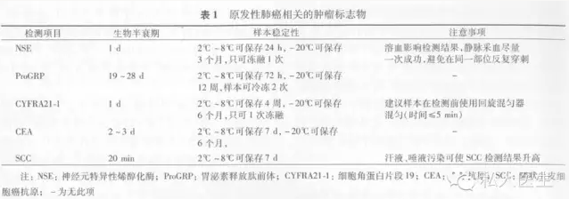

《中国原发性肺癌诊疗规范（2015年版）》（下简称肺癌诊疗规范）于2015年1月在《中华肿瘤杂志》正式发表。本版规范由国家卫生和计划生育委员会《中国原发性肺癌诊疗规范（2015年版）》专家委员会编写。
据首都医科大学肺癌诊疗中心主任兼宣武医院胸外科主任支修益教授，2015版规范的突出亮点有：
①专家委员会的队伍更加壮大，覆盖领域更加全面，除胸外科、呼吸科、肿瘤内科、放疗科和病理科专家外，还将检验科、影像科、流行病学和肿瘤康复专家加入进来，充分体现了肺癌多学科协作的精神。
②内容更加全面和丰富，除介绍胸外科微创手术、包括化疗和靶向治疗的药物治疗和精确放射治疗技术外，还纳入了肺癌的分子病理分型、血液肿瘤标志物、控烟和肺癌筛查、以及晚期肺癌患者康复等方面的内容，其中对于基于基因检测指导下的分子靶向个体化治疗等前沿内容也有涉及。
③强调了肺癌的筛查和早期发现，强调了胸部低剂量螺旋CT扫描在早期发现早期肺癌中的重要作用，推荐对于肺癌高发地区的高危人群使用低剂量螺旋CT进行筛查。
④结合最新的循证医学证据，对一些临床热点问题作出了回答和推荐。例如在肺癌的外科治疗方面，提出只要没有外科手术禁忌证，I期、II期，甚至部分III期非小细胞肺癌患者都提倡应用胸腔镜等微创手术；另外对于更早期的肺癌，如筛查项目和健康体检中发现的肺部病灶＜2 cm，无肺门淋巴结和纵膈淋巴结转移，可考虑实施亚肺叶切除手术，特别是对于低肺功能、高龄的早期肺癌患者，希望在切除病灶的同时，给患者带来更好的生活质量。
据悉，对2015版肺癌诊疗规范的深入解读正在筹备中，即将通过多种渠道包括规范解析推广和专题研讨等与全国各地的肺癌领域医务工作者见面。
以下为2015版规范全文
一、概述
（一）前言
原发性肺癌（以下简称肺癌）是我国最常见的恶性肿瘤之一。全国肿瘤登记中心 2014 年发布的数据显示，2010 年，我国新发肺癌病例 60.59 万（男性 41.63 万，女性 18.96 万），居恶性肿瘤首位（男性首位，女性第 2 位），占恶性肿瘤新发病例的 19.59%（男性 23. 03%，女性 14. 75%）。
肺癌发病率为 35. 23/10 万（男性 49.27/10 万，女性 21.66/10 万）。同期，我国肺癌死亡人数为 48.66 万（男性 33.68 万，女性 16.62 万），占恶性肿瘤死因的 24.87%（男性 26. 85%，女性 21. 32%）。肺癌死亡率为 27. 93/10 万（男性 39. 79/10 万，女性 16.62/10 万）。
在高危人群中开展肺癌筛查有益于早期发现早期肺癌，提高治愈率。低剂量 CT（low-dose computedtomography，LDCT） 发现早期肺癌的敏感度是常规胸片的 4-10 倍，可以早期检出早期周围型肺癌。国际早期肺癌行动计划数据显示，LDCT 年度筛查能发现 85% 的 I 期周围型肺癌，术后 10 年预期生存率达 92%。
美国全国肺癌筛查试验证明，LDCT 筛查可降低 20% 的肺癌死亡率，是目前最有效的肺癌筛查工具。我国目前在少数地区开展的癌症筛查与早诊早治试点技术指南中推荐采用 LDCT 对高危人群进行肺癌筛查。
美国国立综合癌症网络 （NationalComprehensive Cancer Network，NCCN） 指南中提出的肺癌筛查风险评估因素包括吸烟史（现在和既往）、氡暴露史、职业史、患癌史、肺癌家族史、疾病史（慢阻肺或肺结核）、烟雾接触史（被动吸烟暴露）。
风险状态分 3 组：（1）高危组：年龄 55~ 74 岁，吸烟史≥30 包年，戒烟史 <15 年（1 类）；或年龄≥50 岁，吸烟史≥20 包年，另外具有被动吸烟除外的项危险因素（2B 类）。（2） 中危组：年龄≥50 岁，吸烟史或被动吸烟接触史≥20 包年，无其他危险因素。（3）低危组：年龄<50 岁，吸烟史<20 包年。NCCN 指南建议高危组进行肺癌筛查，不建议低危组和中危组进行筛查。
为进一步规范我国肺癌的诊疗行为，提高医疗机构肺癌的诊疗水平，改善肺癌患者的预后，保障医疗质量和医疗安全，国家卫生和计划生育委员会医政医管局委托中国抗癌协会肿瘤临床化疗专业委员会，在原卫生部《原发性肺癌诊疗规范（2010 版）》的基础上进行了更新，制订了本规范。
（二）临床表现
1.肺癌早期可无明显症状，当病情发展到一定程度时，常出现以下症状：（1） 刺激性干咳。（2） 痰中带血或血痰。（3） 胸痛。（4） 发热。（5） 气促。当呼吸道症状超过 2 周，经对症治疗不能缓解，尤其是痰中带血、刺激性干咳，或原有的呼吸道症状加重，要高度警惕肺癌存在的可能性。
2.当肺癌侵及周围组织或转移时，可出现如下症状：
（1） 肿瘤侵犯喉返神经出现声音嘶哑。
（2） 肿瘤侵犯上腔静脉，出现面、颈部水肿等上腔静脉梗阻综合征表现。
（3） 肿瘤侵犯胸膜引起胸膜腔积液，往往为血性；大量积液可以引起气促。
（4） 肿瘤侵犯胸膜及胸壁，可以引起持续剧烈的胸痛。
（5） 上叶尖部肺癌可侵入和压迫位于胸廓入口的器官组织，如第一肋骨、锁骨下动、静脉、臂丛神经、颈交感神经等，产生剧烈胸痛，上肢静脉怒张、水肿、臂痛和上肢运动障碍，同侧上眼脸下垂、瞳孔缩小、眼球内陷、面部无汗等颈交感神经综合征表现。
（6） 近期出现的头痛、恶心、眩晕或视物不清等神经系统症状和体征应当考虑脑转移的可能。
（7） 持续固定部位的骨痛、血浆碱性磷酸酶或血钙升高应考虑骨转移的可能。
（8） 右上腹痛、肝肿大、碱性磷酸酶、天门冬氨酸氨基转移酶、乳酸脱氢酶或胆红素升高应考虑肝转移的可能。
（9） 皮下转移时可在皮下触及结节。
（10） 血行转移到其他器官可出现转移器官的相应症状。
（三）体格检查
1.多数早期肺癌患者无明显相关阳性体征。
2.患者出现原因不明、久治不愈的肺外征象，如杵状指（趾）、非游走性关节疼痛、男性乳腺增生、皮肤黝黑或皮肌炎、共济失调和静脉炎等。
3.临床表现高度可疑肺癌的患者，体检发现声带麻痹、上腔静脉梗阻综合征、Horner 征、Pancoast 综合征等提示局部侵犯及转移的可能。
4.临床表现高度可疑肺癌的患者，体检发现肝肿大伴有结节、皮下结节、锁骨上窝淋巴结肿大等提示远处转移的可能。
（四）影像学检查
肺癌的影像检查方法主要包括：X 线胸片、CT、磁共振成像 （magnetic resonance imaging，MRI）、超声、核素显像、正电子发射计算机断层扫描（positronemission tomography/computed tomography， PET-CT） 等方法。主要用于肺癌诊断、分期、再分期、疗效监测及预后评估等。在肺癌的诊治过程中，应根据不同的检查目的，合理、有效地选择一种或多种影像学检查方法。
1.胸部 X 线检查：胸片是肺癌治疗前后基本的影像学检查方法，通常包括胸正、侧位片。当对胸片基本影像有疑问，或需要了解胸片显示影像的细节，或寻找其他对影像诊断有帮助的信息时，应有针对性地选择进一步的影像检查方法。
2.胸部 CT 检查：胸部 CT 能够显示许多在 X 线胸片上难以发现的影像信息，可以有效地检出早期周围型肺癌，进一步验证病变所在的部位和累及范围，也可鉴别其良、恶性，是目前肺癌诊断、分期、疗效评价及治疗后随诊中最重要和最常用的影像手段。
对于肺癌初诊患者胸部 CT 扫描范围应包括双侧肾上腺。对于难以定性诊断的胸部病变，可采用 CT 引导下经皮肺穿刺活检来获取细胞学或组织学诊断。对于高危人群的肺癌筛查，推荐采用胸部 LDCT 扫描。
CT 和薄层重建是肺结节最主要的检查和诊断方法。对于肺内≤2 cm 孤立性结节，应常规进行薄层重建和多平面重建；对于初诊不能明确诊断的结节，视结节大小、密度不同，给予 CT 随诊间隔；随诊中关注结节大小、密度变化，尤其是部分实性结节中的实性成分增多和非实性结节中出现实性成分。
3.MRI 检查：MRI 检查在胸部可选择性地用于以下情况：判定胸壁或纵隔是否受侵；显示肺上沟瘤与臂丛神经及血管的关系；区分肺门肿块与肺不张、阻塞性肺炎的界限；对禁忌注射碘造影剂的患者，是观察纵隔、肺门大血管受侵情况及淋巴结肿大的首选检查方法；对鉴别放疗后纤维化与肿瘤复发亦有一定价值。
MRI 特别适用于判定脑、脊髓有无转移，脑增强 MRI 应作为肺癌术前常规分期检查。MRI 对骨髓腔转移敏感度和特异度均很高，可根据临床需求选用。
4.超声检查：主要用于发现腹部实性重要器官以及腹腔、腹膜后淋巴结有无转移，也用于双侧锁骨上窝淋巴结的检查；对于邻近胸壁的肺内病变或胸壁病变，可鉴别其囊、实性以及进行超声引导下穿刺活检；超声还常用于胸腔积液及心包积液抽取定位。
5.骨扫描检查：用于判断肺癌骨转移的常规检查。当骨扫描检查提示骨可疑转移时，对可疑部位进行 MRI、CT 或 PET-CT 等检查验证。
6.PET-CT 检查：有条件者推荐使用。是肺癌诊断、分期与再分期、疗效评价和预后评估的最佳方法。
（五）内窥镜检查
1.支气管镜检查：支气管镜检查技术是诊断肺癌最常用的方法，包括支气管镜直视下刷检、活检、针吸以及支气管灌洗获取细胞学和组织学诊断。上述几种方法联合应用可以提高检出率。
2.经支气管针吸活检术 （transbronchial needle aspiration，TBNA） 和超声支气管镜引导的经支气管针吸活检术（endobronchial ultrasound-guided transbronchialneedle aspiration，EBUS-TBNA）：可以穿刺气管或支气管旁的淋巴结和肿块，有助于肺癌诊断和淋巴结分期。传统 TBNA 根据胸部 CT 定位操作，对术者要求较高，不作为常规推荐的检查方法，有条件的医院应当积极开展。EBUS-TBNA 实时进行胸内病灶的穿刺，对肺癌病灶及淋巴结转移能够获得精确病理及细胞学诊断，且更具有安全性和可靠性。
3.经支气管肺活检术 （transbronchial lungbiopsy，TBLB）：可在 X 线、CT、气道超声探头、虚拟支气管镜、电磁导航支气管镜和细支气管镜引导下进行，适合诊断中外 2/3 的肺外周病变 （peripheralpulmonary lesions，PPL），在诊断 PPL 的同时检查了管腔内情况，是非外科诊断肺部结节的重要手段。
4.纵隔镜检查：作为确诊肺癌和评估淋巴结分期的有效方法，是目前临床评价肺癌纵隔淋巴结状态的金标准。
5.胸腔镜检查：可以准确地进行肺癌诊断和分期，对于 TBLB 和经胸壁肺肿物穿刺针吸活检术 （transthoracic needle aspiration，TTNA） 等检查方法无法取得病理标本的早期肺癌，尤其是肺部微小结节病变行胸腔镜下病灶楔形切除，可达到明确诊断及治疗目的。
对于中晚期肺癌，胸腔镜下可以行淋巴结、胸膜和心包的活检，胸水及心包积液的组织和细胞学检查，为制订全面治疗方案和个体化治疗方案提供可靠依据。
（六）其他检查技术
1.痰细胞学检查：是目前诊断肺癌简单方便的无创伤性诊断方法之一。
2. TTNA: 可在 CT 或超声引导下进行胸内肿块或淋巴结的穿刺。
3.胸腔穿刺术：胸腔穿刺术可以获取胸腔积液，进行细胞学检查。
4.胸膜活检术：对于诊断不明的胸腔积液，胸膜活检可以提高阳性检出率。
5.浅表淋巴结及皮下转移结节活检术：对于伴有浅表淋巴结肿大及皮下转移结节者，应常规进行针吸或活检，以获得病理学诊断。
（七）实验室检查
1.实验室一般检测：患者在治疗前，需要行实验室常规检测，以了解患者的一般状况以及是否适于采取相应的治疗措施。（1） 血常规检测；（2） 肝肾功能等检测及其他必要的生化检查；（3） 如需进行有创检查或手术治疗的患者，还需进行必要的凝血功能检测。
2.血清学肿瘤标志物检测：目前美国临床生化委员会和欧洲肿瘤标志物专家组推荐常用的原发性肺癌标志物有癌胚抗原 （carcinoembryonic antigen，CEA），神经元特异性烯醇化酶（neuron-specificenolase，NSE），细胞角蛋白片段 19（cytokeratinfragment，CYFRA21-I） 和胃泌素释放肽前体 （pro-gastrin-releasing peptide，ProGRP），以及鳞状上皮细胞癌抗原（squamous cell carcinoma antigen，SCC） 等。以上肿瘤标志物联合使用，可提高其在临床应用中的敏感度和特异度。
（1） 辅助诊断：临床诊断时可根据需要检测肺癌相关的肿瘤标志物，行辅助诊断和鉴别诊断，并了解肺癌可能的病理类型。①小细胞肺癌 （small cell lung cancer，SCLC）：NSE 和 ProGRP 是诊断 SCLC 的理想指标。②非小细胞肺癌 （non-small cell lung cancer，NSCLC）：在患者的血清中，CEA、SCC 和 CYFRA21-1 水平的升高有助于 NSLCL 的诊断。SCC 和 CYFRA21-I 一般认为其对肺鳞癌有较高的特异性。若将 NSE、CYFRA21-1、ProGRP、CEA 和 SCC 等指标联合检测，可提高鉴别 SCLC 和 NSCLC 的准确率。
（2） 疗效监测：治疗前（包括手术前、化疗前、放疗前和分子靶向治疗前）需要进行首次检测，选择对患者敏感的 2-3 种肿瘤标志物作为治疗后疗效观察的指标。患者在接受首次治疗后，根据肿瘤标志物半衰期的不同可再次检测。SCLC 患者在接受化疗后 NSE 和 ProGRP 较之前升高，提示可能预后不良，或生存期较短；而治疗后明显下降则提示预后可能较好。仅有血清标志物升高而没有影像学进展的依据时，不要改变肺癌原有的治疗策略。
（3） 随访观察：建议患者在治疗开始后 1-3 内，应每 3 个月检测 1 次肿瘤标志物；3-5 年内每半年 1 次；5 年以后每年 1 次。随访中若发现肿瘤标志物明显升高（超过 25%），应在 1 个月内复测 1 次，如果仍然升高，则提示可能复发或存在转移。NSE 和 ProGRP 对 SCLC 的复发有较好的预测价值，超过 50% 的患者复发时 NSE 和 ProGRP 水平升高（定义：连续 2 次 NSE 和 ProGRP 升高水平较前次测定增加 >10%，或 1 次测定较之前增加 >50%）；对于 NSCLC 患者，术后 CEA 水平仍升高提示预后不良，应密切随访。
（4） 注意事项：①肿瘤标志物检测结果与所使用的检测方法密切相关，不同检测方法得到的结果不宜直接比较。在治疗观察过程中，如果检测方法变动，必须使用原检测方法同时平行测定，以免产生错误的医疗解释。②各实验室应研究所使用的检测方法，建立适当的参考区间（表 1）。

二、病理诊断评估
（一）肺癌的标本固定标准
使用 4% 甲醛固定液，避免使用含有重金属的固定液，固定液量应为所固定标本体积≥10 倍，常温固定。标本从离体到固定时间不宜超过 30 min。活检标本直接放入固定液，肺叶或全肺切除标本可从支气管注入足量固定液，也可插入探针沿着支气管壁及肿瘤切开肺组织固定。固定时间：支气管镜活检标本为 6-24 h；手术切除标本为 12-48 h。
细胞学标本（痰液、胸水）固定应采用 95% 乙醇固定液，时间不宜少于 15 min，或采用非妇科液基细胞学固定液（固定时间和方法可按说明书进行操作）；当需制成脱落细胞蜡块时，则可用 95% 乙醇固定，时间≥2 h。
（二）标本大体描述及取材要求
活检标本核对无误后将送检组织全部取材。
1.局部肺切除标本：
（1） 去除外科缝合线或金属钉。
（2） 记录标本的大小以及胸膜表面的情况。
（3） 垂直切缘切取肺实质组织块，描述肿块的大小、切面情况（伴有无出血、坏死、空洞形成）及其与胸膜和肺实质的关系，以及肿块边缘与切缘的距离。
（4） 根据病变的部位和大小切取肿瘤、肿瘤与胸膜、肿瘤与肺实质切缘等部位，当肿瘤 <3 cm 时需将瘤体全部取材。
（5） 切取非肿瘤部位肺组织。
2.肺叶切除标本：
（1） 检查肺的五大基本结构：气道、肺实质、胸膜、血管和淋巴结。测量大小，以肺门给标本定位。
（2） 取支气管切缘、血管切缘及肿瘤与胸膜最近处，或与其他肺叶的粘连处。
（3） 查找肺门淋巴结。
（4） 按照肿瘤的部位和状态，可有 2 种选择：一是沿着支气管壁及肿瘤切开肺组织（可借助于插入气管内的探针）的标本，打开支气管及其分支，以便最好地暴露病变与各级支气管及周围肺组织的结构关系。二是对主支气管内注入甲醛的标本，每隔 0.5-1.0cm 切开，切面应为额平面，垂直于肺门。
（5） 描述肿瘤大小、切面情况（伴有无出血、坏死、空洞形成）、在肺叶和肺段内的位置以及与支气管的关系、病变范围（局灶或转移）和远端或局部继发性改变。取材块数依据具体病变大小 （<3 cm 的肿瘤应全部取材）、具体部位、是否有伴随病变而定（与临床分期相关），应包含肿瘤与胸膜、肿瘤与叶或段支气管（以标本而不同）、肿瘤与周围肺或继发病变、肿瘤与肺断端或支气管断端等；跨叶标本取材还应包括肿瘤与所跨叶的关系部分。临床送检 N2 或其他部位淋巴结应全部计数取材。
推荐取材组织块体积不大于 2.5 cm×1.5 cm×0.3 cm。
（三）取材后标本处理原则和保留时限
取材剩余组织保存在标准固定液中，并始终保持充分的固定液量和甲醛浓度，以备在病理诊断报告签发后接到临床反馈信息时复查大体标本或补充取材。剩余标本处理的时限建议在病理诊断报告签发 1 个月后，未接到临床反馈信息，未发生因外院会诊意见分歧而要求复审等情形后，由医院自行处理。
（四）组织病理诊断
小活检组织标本肺癌病理诊断主要解决有无肿瘤及肿瘤类型，对于形态学不典型的病例或晚期不能手术的患者病理诊断需结合免疫组化染色尽可能进行亚型分类，尽量避免使用非特殊类型 （NSCLC-NOS） 的诊断。
手术切除大标本肺癌组织学类型应根据国际最新病理分类标准（201 1 年国际多学科肺腺癌分类或即将更新的 WHO 肺癌分类标准版本）。
原位腺癌、微小浸润性腺癌和大细胞癌不能在小活检标本、术中冰冻病理诊断中完成，需手术切除标本肿瘤全部或充分取材后方可诊断。
（五）病理报告内容
临床信息包括姓名、性别、年龄、病历号、送检科室、病变部位、活检方式或手术方式、相关肿瘤史和治疗史。大体描述内容包括标本类型、肿瘤大小、与支气管（不同类型标本）或胸膜的关系、其他伴随病变或多发病变、切缘。
诊断内容包括肿瘤部位、组织学亚型、累及范围（支气管、胸膜、脉管、神经、伴随病变类型、肺内播散灶、淋巴结转移情况等）、切缘及必要的特殊染色、免疫组化结果或分子病理检测结果。包含的信息应满足临床分期的需要，并给出 pTNM 分期。
（六）免疫组化、特殊染色和分子病理检测 腺癌与鳞状细胞癌鉴别的免疫组化标记物宜选用 TTF-1、Napsin-A、p63、P40 和 CK5/6；神经内分泌肿瘤标记物宜选用 CD56、Syn、CgA、Ki-67 和 TTF-1，在具有神经内分泌形态学特征基础上，至少有一种神经内分泌标记物明确阳性，阳性细胞数应 > 10% 肿瘤细胞量才可诊断神经内分泌肿瘤；细胞内黏液物质的鉴别宜进行黏卡、AB-PAS 特殊染色；可疑累及胸膜时应进行弹力纤维特殊染色确认。
对于晚期 NSCLC、腺癌或含腺癌成分的其他类型肺癌，应在诊断的同时常规进行表皮生长因子受体 （epidermal growth factor receptor，EGFR） 基因突变和间变性淋巴瘤激酶 （anaplastic lymphoma kinase，ALK） 融合基因等检测，检测前应有送检标本的质控（包括亚型确认及样本量确认）。检测标本类型包括活检组织、细胞学标本和细胞蜡块，检测方法推荐使用获国家食品药品监督管理总局批准的检测方法或试剂。（未完待续）

慈铭奥亚官方公众微信“私人医生”
（微信号：sirenyisheng007）